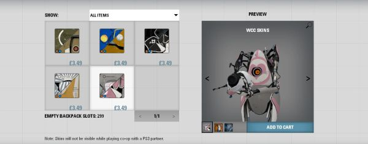

Portal 2 as platform?
2011-04-20 16:24:22
status: inherit
author: Justin
Like many others, I have been immersed in Portal 2 since it was released yesterday. I absolutely loved the experience playing through single player mode and what I have seen of co-op thus far - the game serves as a strong reminder to why I want to dedicate my life
to game creation.
Now that the praise is out of the way, I was surprised and somewhat appalled at the inclusion of a Team Fortress 2-like microtransactionstore within the game. That is, the Portal 2 store allows players to pay real money (usually $1 to $5) for arguably meaningless aesthetic changes to the two robots used in the co-op campaign. These changes include skins, hats, gestures (unique animations used by the robots in-game), and so on.

At first I brushed off the addition of the store as Valve giving players an opportunity to "donate" additional money to the developer if they were so inclined (with a minor incentive). However upon some reflection, this simple answer doesn't seem to make much sense. Would enough players really be willing to pay real money to customize an avatar in a game that lasts under 5 hours (which also has relatively low replayability) to justify the effort of including a store system? Is Valve banking on the gaming community's love of Portal 2 to simply make some extra revenue?
Valve is known to be very business savvy while still greatly respecting their players. The only way I could picture the store being appreciated (and not scorned) by a large percentage of players is if Valve intends to add additional playable content... and lots of it. Is the store a foundation for a turning Portal 2 into a platform of frequently updated, free content similar to Team Fortress 2? By having the store built into the core of the game from launch, they are securing a slow-burning income model that could fund a team to consistently deliver content and support, the same model that has been proven to work with TF2.
These conclusions could simply be my respect for Valve obfuscating a very clear money-grab, but I remain hopeful.
Comments:
{kind=link}